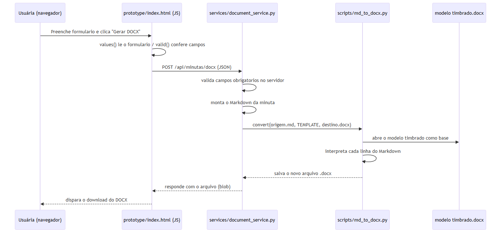

A geração do DOCX deverá ocorrer por botão dentro do site, sem exigir PowerShell do usuário.
Foi criado services/document_service.py, com endpoint local POST /api/minutas/docx, que recebe dados, usa o conversor e devolve o DOCX.
Ainda não há integração com o formulário, autenticação, aprovação, persistência ou PDF. O serviço escuta somente em localhost e deve receber apenas dados fictícios.
Conectar o formulário ao endpoint e criar a aprovação antes do PDF.
Fluxo completo da geração de DOCX, do clique no protótipo até o download (detalhes em docs/logica-de-programacao.md):

Trecho de services/document_service.py — o endpoint criado nesta sessão:
required = ("cliente", "processo", "finalidade", "fatos", "pedido")
if any(not str(payload.get(field, "")).strip() for field in required):
self.send_error(400, "Campos obrigatórios ausentes")
return
markdown = (f"# Manifestação simples\n\n**Cliente/parte representada:** {payload['cliente']} \n"
f"**Processo:** {payload['processo']}\n\n## Finalidade\n\n{payload['finalidade']}\n\n"
f"## Fatos e informações\n\n{payload['fatos']}\n\n## Pedido ou providência\n\n{payload['pedido']}\n")
with tempfile.TemporaryDirectory(prefix="minuta-") as folder:
base = Path(folder)
source = base / "minuta.md"
output = base / "manifestacao.docx"
source.write_text(markdown, encoding="utf-8")
convert(source, TEMPLATE, output)
content = output.read_bytes()O servidor repete a validação já feita no navegador e usa um diretório temporário para gerar e ler o DOCX sem deixar arquivos residuais em disco.